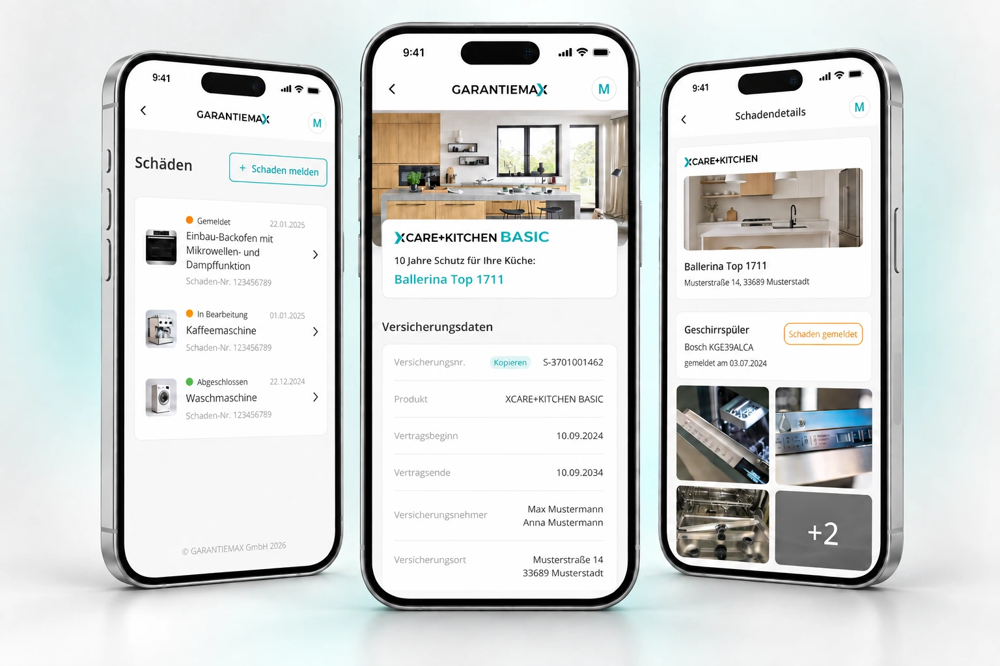
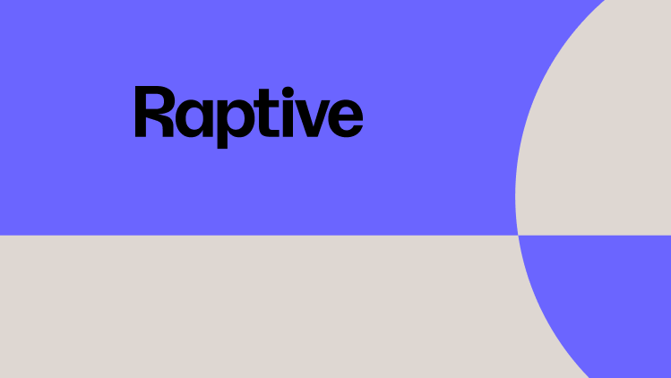
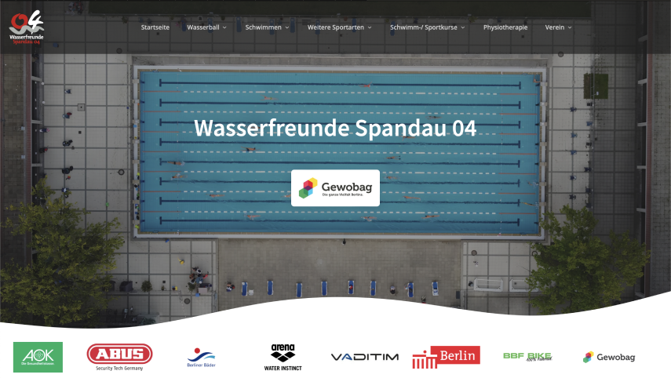
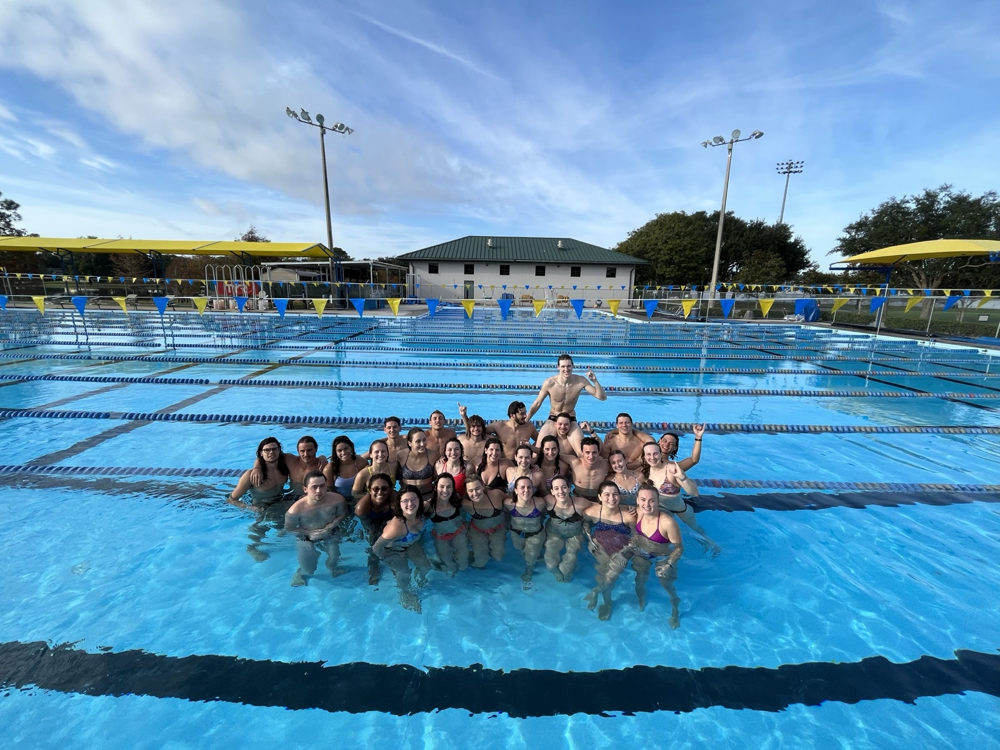
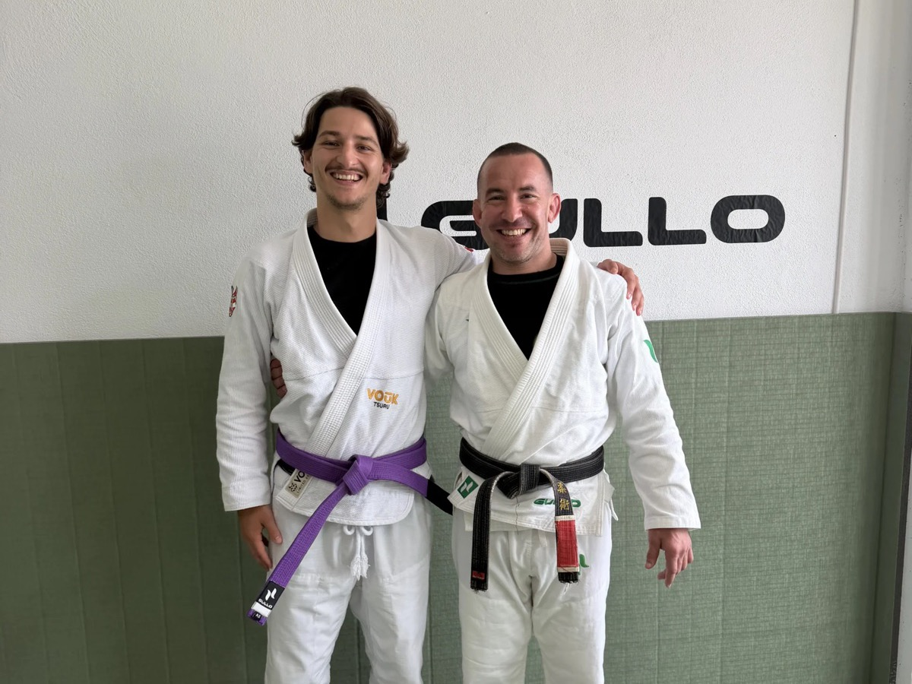
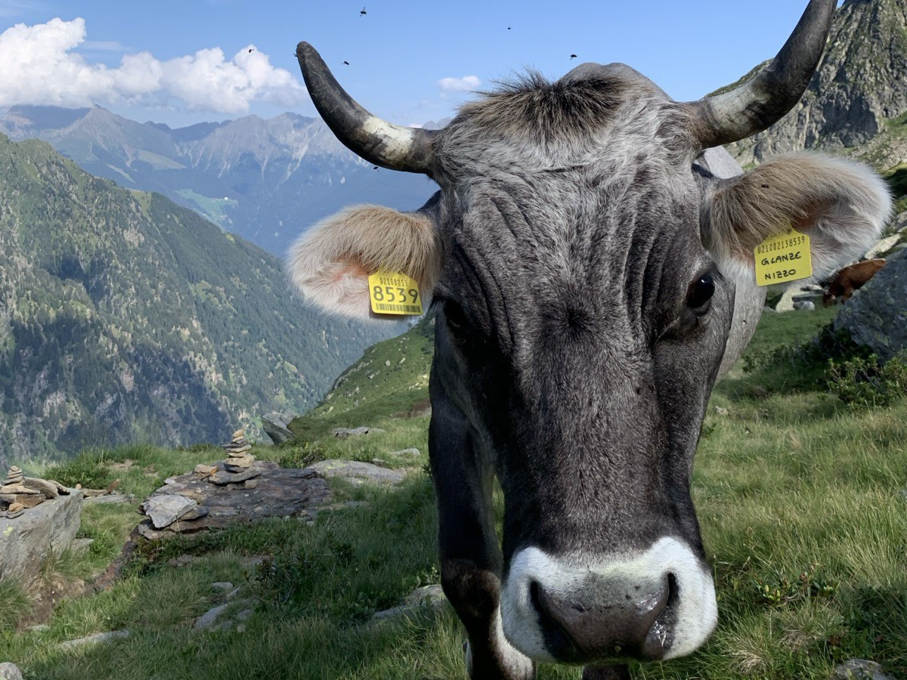

Selected work

Design lead across the entire digital ecosystem of a kitchen warranty and insurance company: I rebuilt the customer app, designed the B2B partner platform and the website, and built the two design systems that hold them together.

A design system built before Dev Mode existed. Manual spec sheets, shared components and a rebrand rolled out without redesigning every screen.

Running digital operations for Germany’s most successful water polo club on a volunteer budget: a rebuilt website, a swim course booking path that converts, and Instagram campaigns that turn followers into members and bookings.
How I operate
Five things people who work with me notice.
I run one loop.
Curiosity, research, synthesis, decision, execution, iteration. Every project goes through it, usually more than once.
I learn what I do not know yet.
When I do not know something, I learn enough to do it or to brief the expert properly.
I go deep in design and stay fluent around it.
My core is UX, product and design systems. I know enough engineering, operations, marketing and AI tooling to speak each team’s language.
I check the answer before I trust it.
Mine, the team’s and the AI’s. If it does not match how the product or the people really work, it goes back.
I start where it is still unclear.
The undefined part of a project is where I am most useful. I turn it into something people can react to: a map of how it really works, a prototype, a decision.
How I work
I learned the manual way. Now the machines do the manual part.
Good design decisions come from having done the work by hand at least once.
Two design systems built component by component, hundreds of specs written for developers, 426 tickets run across two products. That is why I can tell when a tool or an AI hands me something that will not hold up.
At GARANTIEMAX the first system covered the phone app only, because the app came first. When the partner platform arrived I extended it to desktop instead of starting again, then aligned both, so they now share 94 names for things like colour and spacing and 26 components.
Legal rules, what the backend can actually return, who is allowed to see what, and the budget. Those decide more than the interface does, so I map them first and design what the product can really do.
Wasserfreunde Spandau 04 is a swimming club with no design budget and no product team. It still got a booking path that converts and honest numbers to show for it.
Documentation, data extraction, first drafts and test coverage run automatically in my workflow. What to build, what to drop and how to explain the trade-off to the person paying for it stays with me.
When a number is an estimate, I label it as one. When a result had causes besides my work, I say so. It costs me a few impressive slides and it is why the other numbers can be trusted.
Off the desk

Water. Competitive swimmer for most of my life, athletic scholarship at SCAD, now I lead Spandau 04 digital operations.

Mats. Jiu-Jitsu and MMA, several times a week. The best place I know to be wrong quickly.

Mountains. Three Peaks circuit in the Dolomites, and anything above 3,000 metres.